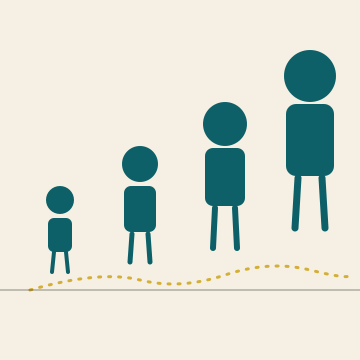

Het Open Vizier · Toekomst · Opvoeding
Een krant over denken zonder oogkleppen

★ TOEKOMST · OPVOEDING
Drie vragen onder één onderwerp: hoe het zich heeft ontwikkeld, hoe het zou kunnen gaan, en hoe opvoeding er werkelijk uit zou moeten zien. Vier artikelen verdeeld over die drie vragen.
★ I · HOE HET ZICH HEEFT ONTWIKKELD
Waar staan we nu — wat zien wij gebeuren met kinderen in een scherm-tijdperk.
★ II · HOE DE EVOLUTIE ZOU GAAN
Wat de visie zegt dat mogelijk is — als wij de juiste ruimte geven.
★ III · HOE HET ZOU MOETEN GAAN
Concrete invulling — wat een kind nodig heeft om zichzelf te worden.
★ Bronnen-edities
De artikelen hieronder zijn afkomstig uit Editie 2 (Belastingbeleid) en Editie 3 (Onder het ijs), waar zij in hun oorspronkelijke context staan. De voormalige Editie Kind & Loopbaan blijft toegankelijk als archief.
★ Terug naar